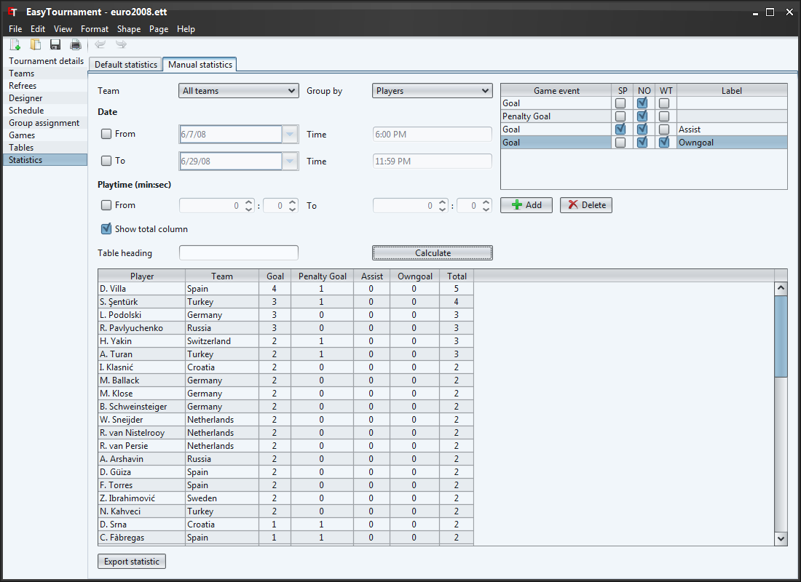

If you filled in the Game reports, you can evaluate all game events on this screen.
It is possible to sort the tables by clicking on the column headers.
With the two drop-down lists you are able to filter and group the events by team of player.
In the "Date" section you can filter the games by date an time. Right under this, in the section "Playtime", statistics can be evaluated by the playtime (e.g. if only goals of the first half-time should be considered).
The table heading is used for printing and HTML export.
With the buttons below the table on the left side (Add, Remove) you can add events, which should be evaluated.
In the column "Game events" it is possible to choose the event.
By selecting the checkbox in the column SP (Secondary Player) events of the secondary players will be evaluated (e.g. Assists).
The checkbox NO (Number of) is used to switch between evaluating the number of times the event occurs or the sum of points. (e.g. Football: if it is selected you get a 2 if two Touchdowns happened and 12 (2x 6 points) if it is no selected.
If the third checkbox WT (Wrong Team) is selected, an event is counted if an event is for Team A, but the player of Team B (e.g. Owngoals on event Goal). This checkbox has no effect to the result if SP is selected.
In the cell "Label" you can set an alternative column header. If this cell is empty the Game event name of column one will be used.
To show the set statistic you need to click on the "Calculate" button
Additionally you are able to save the statistics with the "Export statistic" button as CVS (e.g. for spreadsheet applications as MS Excel) or as HTML file.